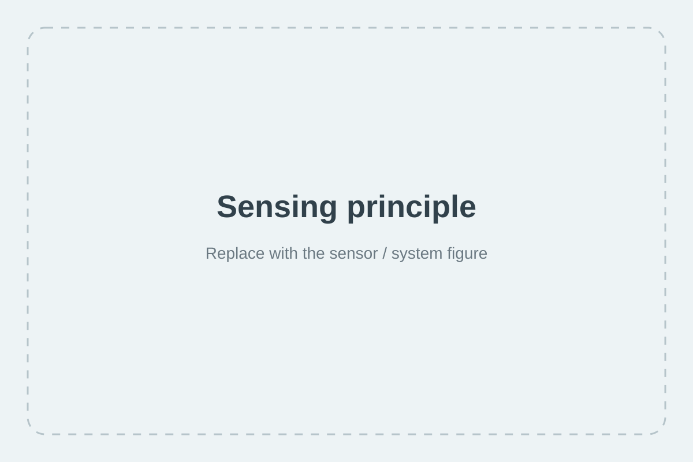
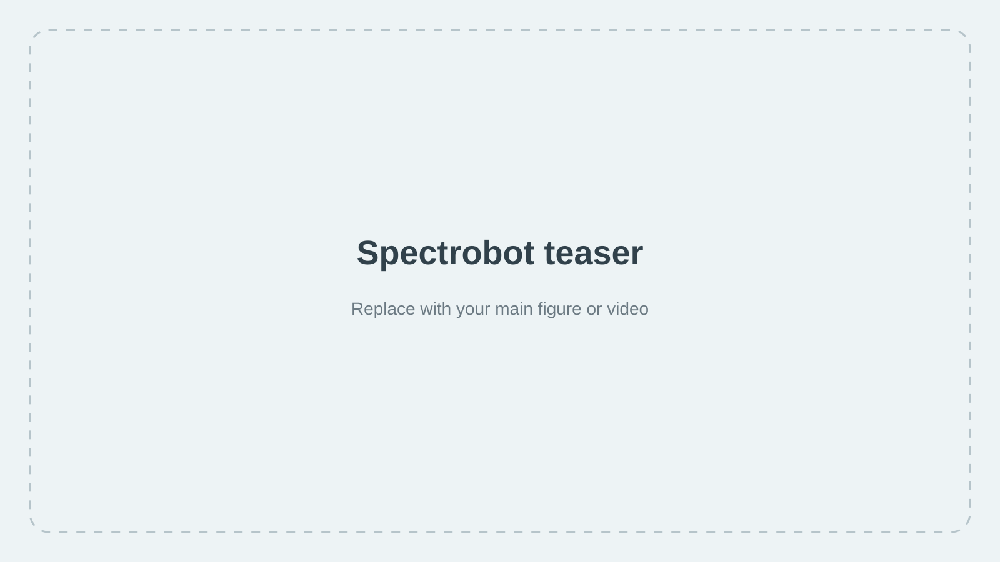
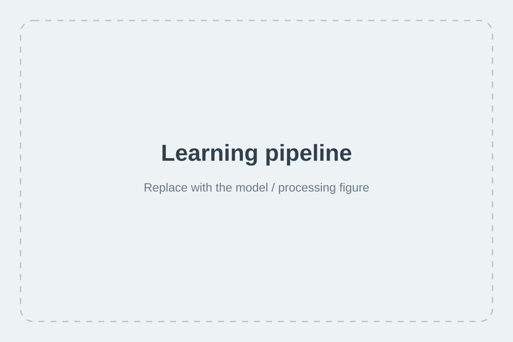

Sensing principle
Describe what the sensor measures, its bandwidth, and why a single sensing point can contain useful information about contact.

Replace this placeholder with your main teaser figure or a short looping video.
Overview
Spectrobot investigates how rich tactile information can be learned from a high-bandwidth single-point sensor. This page will present the sensing principle, learning approach, robotic experiments, and open resources associated with the project.
Replace this paragraph with the abstract of the paper once the final version is ready. Keeping the abstract here makes the project page useful even before visitors open the PDF.
Method
Use this section for the sensing hardware, signal-processing pipeline, learning architecture, or a compact overview of the complete system.

Describe what the sensor measures, its bandwidth, and why a single sensing point can contain useful information about contact.

Explain how the raw time signal is transformed into a learned tactile representation and which tasks are predicted from it.
Experiments
Add the strongest qualitative demos here. Short videos usually work very well for a robotics project page.
One or two sentences explaining what is being tested and the main result.
Use this block for another task, generalization result, or comparison.
Add a third key result, ideally something visually easy to understand.
Citation
@article{spectrobot2026,
title = {Learning Tactile Perception from High-Bandwidth Single-Point Sensing},
author = {Virot, Emmanuel and Rigal, Joseph and Pascal, Caroline},
year = {2026}
}